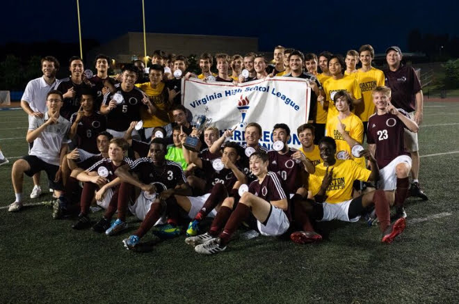
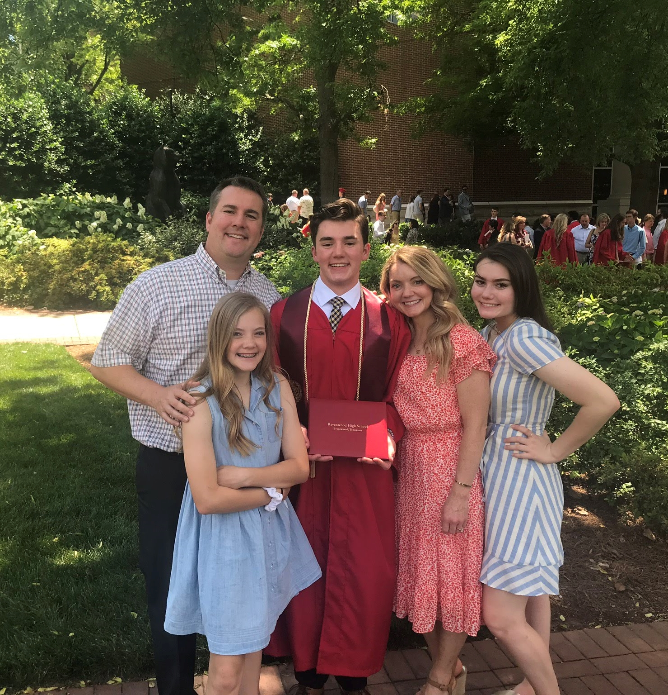
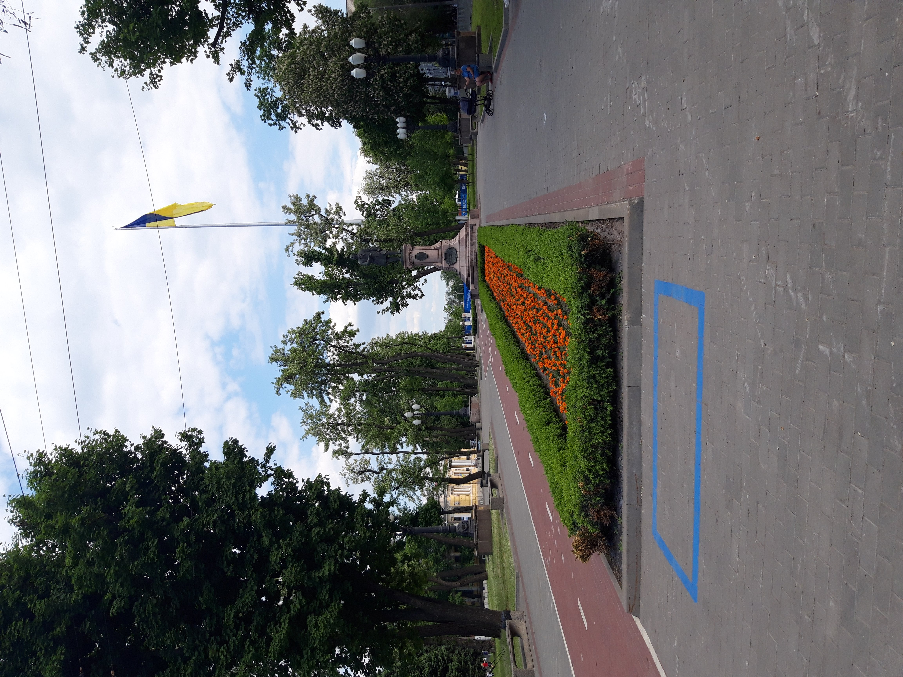

I grew up in Gilbert, Arizona where I attended four different elementary schools and one middle school. I was privileged to be accepted into the gifted program where I was on an accelerated learning path. In eighth grade, my family moved to Fairfax County, Virginia, a suburb of Washington D.C. I attended Oakton High School and kept up the pace of my accelerated learning in Arizona. At Oakton, I took numerous AP credit classes, was a varsity athlete on the State Runner-Up soccer team, and was an accomplished cellist in the nationally recognized school orchestra.

For my senior year, my family moved to Brentwood, Tennessee where I attended Ravenwood High School. Once again, I was an honors student participating in college level courses, a key senior captain of the soccer team, and the first chair cellist in the orchestra. Our orchestra was invited to represent the state of Tennessee at a national festival in Indianapolis in the spring of 2019. I graduated from Ravenwood High School as an honors graduate.

Instead of beginning my higher education immediately, I chose to serve a full-time mission for the Church of Jesus Christ of Latter-Day Saints. I dedicated two years of my life to preach the gospel of Jesus Christ in an area of the world chosen by the leaders of the church. Here is a short video on what being a missionary of the Church of Jesus Christ of Latter-Day Saints means:
I was sent to eastern Ukraine, where I learned to speak Russian fluently. I lived in Alekseyevka, the northern side of Kharkiv, for a year, where I fell in love with the Ukrainian people, their culture, language, and food. After a year, I left to live in downtown Dnipro in the fall of 2020. There, I was privileged to be one of two personal assistants to the president of the Ukraine Dnipro Mission. I was entrusted with leadership responsibilities for all the missionaries in eastern Ukraine, planning and scheduling the president's conferences, interviews, and projects, and tracking the statistics of the mission's key indicators using Microsoft Excel and other applications.

In the early spring of 2021, I was sent to the port city of Mariupol to serve as the Facebook leader of our mission. The other leader and I created content for the page, planned large scale initiatives, and ran facebook ads to find people to teach about the gospel of Jesus Christ. Our mission's Facebook page had over 50,000 followers at the time that I was in charge of it and we received over 1,000 referrals in the short span of a couple months through our efforts. I finished my 2-year mission in August of 2021 and returned home to Brentwood, Tennessee.

Upon my return from Ukraine, I began studying at Brigham Young University in Provo, Utah in the fall of 2021. I am currently a pre-business major with the intent to apply to the finance program in the Marriott School of Business. I expect to graduate in the spring of 2025.

With the recent events in Ukraine, my friend that I served with in Ukraine and I have begun an organization to support and lift those in need. The organization is called The Dari Project. Recently, we organized a 5k color run to raise funds for the people in need currently stuck in Ukraine. More than 200 runners participated and over $15,000 were raised to directly support families in need in areas that I served while on my mission. We hope to see more events in the coming future in an effort to give back and ease needs globally and in local communities.